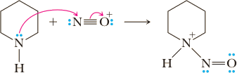
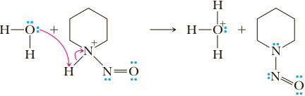

Amines: Reaction with Nitrous Acid
Nitrous acid, HNO2, is an unstable compound that is prepared by adding sulfuric or hydrochloric acid to an aqueous solution of sodium nitrite, NaNO 2 . Nitrous acid is a weak oxygen acid and ionizes according to the following equation.
HNO2 + H2O ⇌ H3O+ + NO2− pKa = 3.37
Nitrous acid undergoes reaction with amines in different ways, depending on whether the amine is primary, secondary, or tertiary and whether it is aliphatic or aromatic. These reactions are all related by the facts that nitrous acid (1) participates in proton-transfer reactions and (2) is a source of the nitrosyl cation, a weak electrophile.
Mechanism: Formation of the Nitrosyl Cation
Step 1: Add a proton. Protonation of the OH group of nitrous acid gives an oxonium ion.
H — O — N = O + HCl ⇌ H2O+ — N = O + Cl−
Step 2: Break a bond to give stable molecules or ions. Loss of water gives the nitrosyl cation, which here is represented as a hybrid of two contributing structures.
H2O+ — N = O ⇌ H2O +
Tertiary Aliphatic Amines
When treated with nitrous acid, tertiary aliphatic amines, whether water-soluble or water-insoluble, are protonated to form water-soluble salts. No further reaction occurs beyond salt formation. This reaction is of no practical use.
Tertiary Aromatic Amines
Tertiary aromatic amines are bases and can also form salts with nitrous acid. An lternative pathway, however, is open to tertiary aromatic amines, namely, electrophilic aromatic substitution. The nitrosyl cation, a very weak electrophile, reacts only with aromatic rings containing strongly activating, ortho-para directing groups, such as the hydroxyl and dialkylamino groups. When treated with nitrous acid, these compounds undergo nitrosation, predominantly in the para position to give blue or green aromatic nitroso compounds.
1. NaNO2, HCl 0-5 °C
⟶
2. NaOH, H2O
Secondary Aliphatic and Aromatic Amines
Secondary amines, whether aliphatic or aromatic, undergo reaction with nitrous acid to give N-nitrosamines as illustrated by the reaction of piperidine with nitrous acid.
1. NaNO2, HCl 0-5 °C
⟶
2. NaOH, H2O
Mechanism Reaction of a 2° Amine with the Nitrosyl Cation to Give an N-Nitrosamine
Step 1: Make a new bond between a nucleophile and an electrophile. Reaction of the 2° amine (a nucleophile) with the nitrosyl cation (an electrophile) gives an N-nitrosammonium ion.
Step 2: Take a proton away. Proton transfer to solvent gives the N-nitrosamine.
N-Nitrosamines are of little synthetic or commercial value. They have received considerable attention in recent years, however, because many of them are potent carcinogens. Following are structural formulas of two N-nitrosamines, each of which is a known carcinogen.
(found in cigarette smoke and when bacon “preserved” with sodium nitrite is fried)
(formed when bacon “preserved” with sodium nitrite is fried)
Common practice within the food industry has been to add sodium nitrite to processed meats to “retard spoilage,” that is, to inhibit the growth of Clostridium botulinum, the bacterium responsible for botulism poisoning. Although this practice was well grounded before the days of adequate refrigeration, it is of questionable value today. Sodium nitrite is also added to prevent red meats from turning brown. If you buy some nice red hamburger in a food market and find it is gray or brown inside, you can be sure that the outside has been treated with sodium nitrite. Controversy over the use of sodium nitrite has been generated by the demonstration that nitrite ion in the presence of acid converts secondary amines to N-nitrosamines and that many N-nitrosamines are powerful carcinogens. This demonstration led in turn to pressure by consumer groups to force the Food and Drug Administration (FDA) to ban the use of nitrite additives in foods. The strength of the argument to ban nitrites was weakened with the fi nding that enzymes in our mouths and intestinal tracts have the ability to catalyze the reduction of nitrate to nitrite. Nitrate ion is normally found in a wide variety of foods and in drinking water. To date, there is no evidence that nitrite as a food additive poses any risk not already present through our existing dietary habits. The FDA has established the current permissible level of sodium nitrite in processed meats as 50 to 125 ppm (that is, 50–125 mg nitrite per gram of cured meat).
Primary Aliphatic Amines
Treatment of a primary aliphatic amine with nitrous acid results in the loss of nitrogen, N2 and the formation of substitution, elimination, and rearrangement products as illustrated by the treatment of butylamine with nitrous acid.
| NaNO2, HCl ⟶ 0-5 °C |  (25%) Substitution | |
(5.2%) Substitution | ||
 (13.2%) racemic, Substitution involving rearrangement | ||
(25.9%) racemic, Elimination | ||
(25.9%) racemic, Elimination involving rearrangement |
The mechanism by which this mixture of products is formed involves formation of a diazonium ion. The conversion of a primary amine to a diazonium ion is called diazotization.
Mechanism Reaction of a 1° Amine with Nitrous Acid
Step 1: Make a new bond between a nucleophile and an electrophile. Reaction of a 1° amine (nucleophile) with the nitrosyl cation (electrophile) is the first step of the mechanism.
Step 2: Take a proton away. Removal of a proton gives an N-nitrosamine.
R—H2N+ — N=O + H2O ⟶ R—HN—N=0 (An N-nitrosamines) + H3O+
Step 3: Keto-enol tautomerism. The N-nitrosamine undergoes keto-enol tautomerism (Section 16.9) to give a diazotic acid, which is so named because it has two (di-) nitrogen (-azot-) atoms within its structure.
R— HN — N=O + H2O
keto-enol tautomerism
⇌
R—N=N=0—H (A diazotic acids)
Step 4: Add a proton. The diazotic acid is protonated.
R—N=N=0—H (A diazotic acids) + H3O+ ⇌ R—N=N=0+H2 + H2O
Step 5: Break a bond to give stable molecules or ions. The protonated diazotic acid loses H2O to give a diazonium ion.
R—N+≡N: + H2O
Step 6: Break a bond to give stable molecules or ions. The diazonium ion then loses the very stable N2 to give a carbocation.
R—N+≡N: ⇌ R+ ⟶ R+ + :N≡N:
Aliphatic diazonium ions are unstable, even at 0°C, and immediately lose nitrogen to give carbocations and nitrogen gas. The driving force for this reaction is the fact that N2 is one of the best leaving groups because it is an extraordinarily weak base and has very strong nitrogen triple bond. It is removed from the reaction mixture as a gas as it is formed. The carbocation now has open to it the three reactions in the repertoire of aliphatic carbocations: (1) loss of a proton to give an alkene, (2) reaction with a nucleophile to give a substitution product, and (3) rearrangement to a more stable carbocation and then reaction further by (1) or (2).
Because treatment of a primary aliphatic amine with HNO2 gives a mixture of products, it is generally not a useful reaction. An exception is the TiffeneauDemjanov reaction in which a cyclic β-aminoalcohol is treated with nitrous acid to give a ring-expanded ketone, with evolution of nitrogen.
β-aminoalcohol
+ HNO2 ⟶
We account for this molecular rearrangement as shown in the following mechanism.